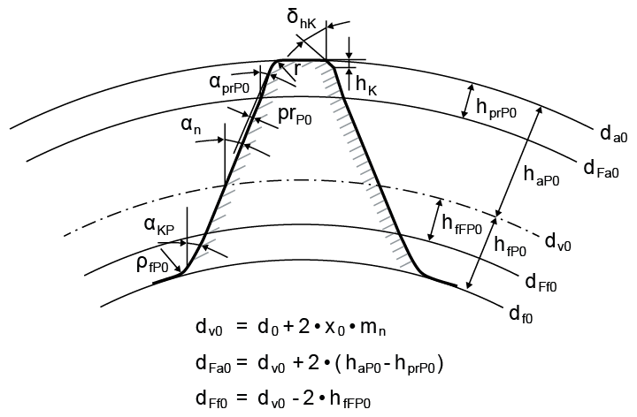

|
|
|


使用插齿刀生成齿条
与使用插齿刀生成圆柱齿轮时一样，再次输入插齿刀的参考齿廓。变位从参考线开始测量，该参考线由主屏幕中的齿条高度减去参考齿廓的齿顶高定义。
变位系数可以直接输入，也可以由预加工和最终处理公差定义。

图 15.84：刀具齿形几何
English Original
Generate rack with a pinion type cutter
Once again, enter the reference profile of the pinion type cutter, as you do when generating a cylindrical gear using a pinion type cutter. The profile shift is measured, starting from a reference line, which is defined by the rack height minus the reference profile addendum in the main screen.
The profile shift coefficients can be either input directly or defined by the pre-machining and final treatment tolerances.
Figure 15.84: Cutter tooth geometry